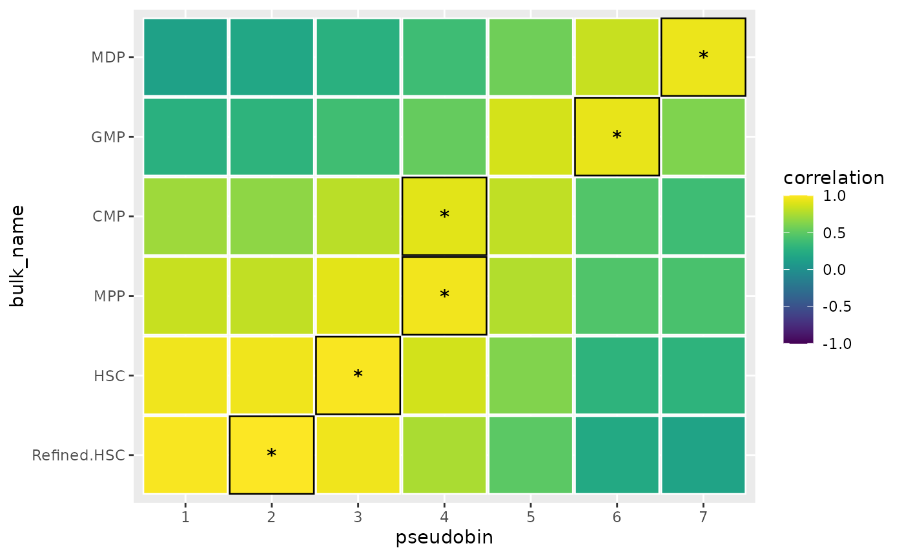

BLASE for Hematopoesis
BLASE-for-Hematopoesis.Rmd
library(blase)
library(fs)
library(Seurat)
#> Loading required package: SeuratObject
#> Loading required package: sp
#> 'SeuratObject' was built with package 'Matrix' 1.6.5 but the current
#> version is 1.7.0; it is recomended that you reinstall 'SeuratObject' as
#> the ABI for 'Matrix' may have changed
#>
#> Attaching package: 'SeuratObject'
#> The following object is masked from 'package:base':
#>
#> intersect
library(dplyr)
#>
#> Attaching package: 'dplyr'
#> The following objects are masked from 'package:stats':
#>
#> filter, lag
#> The following objects are masked from 'package:base':
#>
#> intersect, setdiff, setequal, union
library(slingshot)
#> Loading required package: princurve
#> Loading required package: TrajectoryUtils
#> Loading required package: SingleCellExperiment
#> Loading required package: SummarizedExperiment
#> Loading required package: MatrixGenerics
#> Loading required package: matrixStats
#>
#> Attaching package: 'matrixStats'
#> The following object is masked from 'package:dplyr':
#>
#> count
#>
#> Attaching package: 'MatrixGenerics'
#> The following objects are masked from 'package:matrixStats':
#>
#> colAlls, colAnyNAs, colAnys, colAvgsPerRowSet, colCollapse,
#> colCounts, colCummaxs, colCummins, colCumprods, colCumsums,
#> colDiffs, colIQRDiffs, colIQRs, colLogSumExps, colMadDiffs,
#> colMads, colMaxs, colMeans2, colMedians, colMins, colOrderStats,
#> colProds, colQuantiles, colRanges, colRanks, colSdDiffs, colSds,
#> colSums2, colTabulates, colVarDiffs, colVars, colWeightedMads,
#> colWeightedMeans, colWeightedMedians, colWeightedSds,
#> colWeightedVars, rowAlls, rowAnyNAs, rowAnys, rowAvgsPerColSet,
#> rowCollapse, rowCounts, rowCummaxs, rowCummins, rowCumprods,
#> rowCumsums, rowDiffs, rowIQRDiffs, rowIQRs, rowLogSumExps,
#> rowMadDiffs, rowMads, rowMaxs, rowMeans2, rowMedians, rowMins,
#> rowOrderStats, rowProds, rowQuantiles, rowRanges, rowRanks,
#> rowSdDiffs, rowSds, rowSums2, rowTabulates, rowVarDiffs, rowVars,
#> rowWeightedMads, rowWeightedMeans, rowWeightedMedians,
#> rowWeightedSds, rowWeightedVars
#> Loading required package: GenomicRanges
#> Loading required package: stats4
#> Loading required package: BiocGenerics
#>
#> Attaching package: 'BiocGenerics'
#> The following objects are masked from 'package:dplyr':
#>
#> combine, intersect, setdiff, union
#> The following object is masked from 'package:SeuratObject':
#>
#> intersect
#> The following object is masked from 'package:fs':
#>
#> path
#> The following objects are masked from 'package:stats':
#>
#> IQR, mad, sd, var, xtabs
#> The following objects are masked from 'package:base':
#>
#> anyDuplicated, aperm, append, as.data.frame, basename, cbind,
#> colnames, dirname, do.call, duplicated, eval, evalq, Filter, Find,
#> get, grep, grepl, intersect, is.unsorted, lapply, Map, mapply,
#> match, mget, order, paste, pmax, pmax.int, pmin, pmin.int,
#> Position, rank, rbind, Reduce, rownames, sapply, setdiff, table,
#> tapply, union, unique, unsplit, which.max, which.min
#> Loading required package: S4Vectors
#>
#> Attaching package: 'S4Vectors'
#> The following objects are masked from 'package:dplyr':
#>
#> first, rename
#> The following object is masked from 'package:utils':
#>
#> findMatches
#> The following objects are masked from 'package:base':
#>
#> expand.grid, I, unname
#> Loading required package: IRanges
#>
#> Attaching package: 'IRanges'
#> The following objects are masked from 'package:dplyr':
#>
#> collapse, desc, slice
#> The following object is masked from 'package:sp':
#>
#> %over%
#> Loading required package: GenomeInfoDb
#> Loading required package: Biobase
#> Welcome to Bioconductor
#>
#> Vignettes contain introductory material; view with
#> 'browseVignettes()'. To cite Bioconductor, see
#> 'citation("Biobase")', and for packages 'citation("pkgname")'.
#>
#> Attaching package: 'Biobase'
#> The following object is masked from 'package:MatrixGenerics':
#>
#> rowMedians
#> The following objects are masked from 'package:matrixStats':
#>
#> anyMissing, rowMedians
#>
#> Attaching package: 'SummarizedExperiment'
#> The following object is masked from 'package:Seurat':
#>
#> Assays
#> The following object is masked from 'package:SeuratObject':
#>
#> Assays
library(tradeSeq)
library(BiocParallel)
library(scran)
#> Loading required package: scuttle
#>
#> Attaching package: 'scran'
#> The following object is masked from 'package:TrajectoryUtils':
#>
#> createClusterMST
library(scater)
#> Loading required package: ggplot2
library(viridis)
#> Loading required package: viridisLiteFirst configure R:
RNGversion("3.5.0")
#> Warning in RNGkind("Mersenne-Twister", "Inversion", "Rounding"): non-uniform
#> 'Rounding' sampler used
SEED = 7
set.seed(SEED)
N_CORES = 4
if (ami::using_ci()) {
N_CORES = 2
}Load Single Cell
data(processed_weng_2024_haematopoiesis, package="blase")
processed_weng_2024_haematopoiesis
#> class: SingleCellExperiment
#> dim: 1500 6000
#> metadata(1): tradeSeq
#> assays(4): counts logcounts scaledata normcounts
#> rownames(1500): EBF1 LTBP1 ... MAK PPP2R3A
#> rowData names(1): tradeSeq
#> colnames(6000): AAACAGCCACAGGGAC-3 AAACAGCCACTAAATC-3 ...
#> TTTGTTGGTAACTACG-3 TTTGTTGGTTAGGCGT-3
#> colData names(39): orig.ident nCount_RNA ... tradeSeq crv
#> reducedDimNames(6): PCA UMAP.RNA ... WNN.UMAP UMAP
#> mainExpName: RNA
#> altExpNames(0):
plotUMAP(processed_weng_2024_haematopoiesis, color_by="STD.CellType")
plotUMAP(processed_weng_2024_haematopoiesis, color_by="slingPseudotime_1")
plotUMAP(processed_weng_2024_haematopoiesis, color_by="STD_Cat2")
expected_trajectory = c(
'Refined.HSC',
'HSC', # Haematopoeitic Stem Cell
'MPP', # multipotent progenitors
'CMP', # common myeloid progenitor
'GMP', # granulocyte–monocyte progenitors
'MDP' # Monocyte-dendritic cell progenitor
# 'Mono' # Monocytes - excluded as unclear if part of true haematopoiesis process or mature and BM resident
)
start_cell_type = expected_trajectory[1]
end_cell_type = expected_trajectory[length(expected_trajectory)]
associationTestResult <- associationTest(processed_weng_2024_haematopoiesis, lineages=T, global=F, contrastType="consecutive")
head(associationTestResult)
#> waldStat_1 df_1 pvalue_1
#> EBF1 579.2976 9 0 0.5087777
#> LTBP1 278.0267 9 0 0.7489076
#> XACT NA NA NA 0.6707918
#> LYZ 2087.4766 9 0 0.3033203
#> LINC02109 NA NA NA 0.7437342
#> MPO 4006.3656 9 0 0.4596214
nrow(associationTestResult)
#> [1] 1500Set up BLASE
genelist = blase::get_top_n_genes(associationTestResult, n_genes = 1000, lineage = 1)
res = blase::find_best_params(processed_weng_2024_haematopoiesis, genelist, split_by="pseudotime_range", bins_count_range=c(6, 7, 8,9, 10),gene_count_range=c(10,20,40, 60, 80, 100, 120, 160, 240, 360))
blase::plot_find_best_params_results(res)
blase_data = as.BlaseData(processed_weng_2024_haematopoiesis, n_bins=7)
blase_data@genes = genelist[1:160]
evaluate_parameters(blase_data, make_plot = TRUE)#> [1] 0.0322000 0.1417286Generate “bulk” datasets
In this article we will pseudobulk the Single Cell data into bulk datasets to demonstrate that BLASE can map a given cluster back to itself.
bulks_df = DataFrame(row.names = rownames(counts(processed_weng_2024_haematopoiesis)))
for (type in unique(processed_weng_2024_haematopoiesis$STD.CellType)) {
bulks_df = cbind(bulks_df, rowSums(normcounts(subset(processed_weng_2024_haematopoiesis, , STD.CellType==type))))
}
colnames(bulks_df) = as.character(unique(processed_weng_2024_haematopoiesis$STD.CellType))Run BLASE
We will now verify that BLASE can accurately map these “bulk” datasets back to the SC clusters
results = c()
for (type in expected_trajectory) {
print(type)
results = c(results, map_best_bin(blase_data, type, bulks_df))
}
#> [1] "Refined.HSC"
#> [1] "HSC"
#> [1] "MPP"
#> [1] "CMP"
#> [1] "GMP"
#> [1] "MDP"
results
#> [[1]]
#> MappingResult for 'Refined.HSC': best_bin=2 correlation=0.994670690261338 top_2_distance=0.0121
#> Confident Result: TRUE (next max upper 0.985556076409235 )
#> with history for scores against 7 bins
#> Bootstrapped with 200 iterations
#>
#> [[2]]
#> MappingResult for 'HSC': best_bin=3 correlation=0.985989687097152 top_2_distance=0.0273
#> Confident Result: TRUE (next max upper 0.961933083323567 )
#> with history for scores against 7 bins
#> Bootstrapped with 200 iterations
#>
#> [[3]]
#> MappingResult for 'MPP': best_bin=4 correlation=0.963380405484589 top_2_distance=0.0468
#> Confident Result: TRUE (next max upper 0.921806515879526 )
#> with history for scores against 7 bins
#> Bootstrapped with 200 iterations
#>
#> [[4]]
#> MappingResult for 'CMP': best_bin=4 correlation=0.912562990741826 top_2_distance=0.1004
#> Confident Result: TRUE (next max upper 0.824956052970819 )
#> with history for scores against 7 bins
#> Bootstrapped with 200 iterations
#>
#> [[5]]
#> MappingResult for 'GMP': best_bin=6 correlation=0.932995429508965 top_2_distance=0.0599
#> Confident Result: TRUE (next max upper 0.88220438298371 )
#> with history for scores against 7 bins
#> Bootstrapped with 200 iterations
#>
#> [[6]]
#> MappingResult for 'MDP': best_bin=7 correlation=0.945441228172975 top_2_distance=0.1132
#> Confident Result: TRUE (next max upper 0.847770420719559 )
#> with history for scores against 7 bins
#> Bootstrapped with 200 iterations
plot_mapping_result_heatmap(as.list(results))
sessionInfo()
#> R version 4.4.0 (2024-04-24)
#> Platform: x86_64-pc-linux-gnu
#> Running under: Ubuntu 22.04.4 LTS
#>
#> Matrix products: default
#> BLAS: /usr/lib/x86_64-linux-gnu/openblas-pthread/libblas.so.3
#> LAPACK: /usr/lib/x86_64-linux-gnu/openblas-pthread/libopenblasp-r0.3.20.so; LAPACK version 3.10.0
#>
#> Random number generation:
#> RNG: Mersenne-Twister
#> Normal: Inversion
#> Sample: Rounding
#>
#> locale:
#> [1] LC_CTYPE=C.UTF-8 LC_NUMERIC=C LC_TIME=C.UTF-8
#> [4] LC_COLLATE=C.UTF-8 LC_MONETARY=C.UTF-8 LC_MESSAGES=C.UTF-8
#> [7] LC_PAPER=C.UTF-8 LC_NAME=C LC_ADDRESS=C
#> [10] LC_TELEPHONE=C LC_MEASUREMENT=C.UTF-8 LC_IDENTIFICATION=C
#>
#> time zone: UTC
#> tzcode source: system (glibc)
#>
#> attached base packages:
#> [1] stats4 stats graphics grDevices utils datasets methods
#> [8] base
#>
#> other attached packages:
#> [1] viridis_0.6.5 viridisLite_0.4.2
#> [3] scater_1.32.0 ggplot2_3.5.1
#> [5] scran_1.32.0 scuttle_1.14.0
#> [7] BiocParallel_1.38.0 tradeSeq_1.18.0
#> [9] slingshot_2.12.0 TrajectoryUtils_1.12.0
#> [11] SingleCellExperiment_1.26.0 SummarizedExperiment_1.34.0
#> [13] Biobase_2.64.0 GenomicRanges_1.56.0
#> [15] GenomeInfoDb_1.40.0 IRanges_2.38.0
#> [17] S4Vectors_0.42.0 BiocGenerics_0.50.0
#> [19] MatrixGenerics_1.16.0 matrixStats_1.3.0
#> [21] princurve_2.1.6 dplyr_1.1.4
#> [23] Seurat_5.0.3 SeuratObject_5.0.1
#> [25] sp_2.1-4 fs_1.6.4
#> [27] blase_0.0.0.9000
#>
#> loaded via a namespace (and not attached):
#> [1] RcppAnnoy_0.0.22 splines_4.4.0
#> [3] later_1.3.2 tibble_3.2.1
#> [5] polyclip_1.10-6 fastDummies_1.7.3
#> [7] lifecycle_1.0.4 edgeR_4.2.0
#> [9] globals_0.16.3 lattice_0.22-6
#> [11] MASS_7.3-60.2 backports_1.4.1
#> [13] magrittr_2.0.3 limma_3.60.0
#> [15] plotly_4.10.4 sass_0.4.9
#> [17] rmarkdown_2.26 jquerylib_0.1.4
#> [19] yaml_2.3.8 metapod_1.12.0
#> [21] httpuv_1.6.15 sctransform_0.4.1
#> [23] spam_2.10-0 spatstat.sparse_3.0-3
#> [25] reticulate_1.36.1 cowplot_1.1.3
#> [27] pbapply_1.7-2 RColorBrewer_1.1-3
#> [29] abind_1.4-5 zlibbioc_1.50.0
#> [31] Rtsne_0.17 purrr_1.0.2
#> [33] GenomeInfoDbData_1.2.12 ggrepel_0.9.5
#> [35] irlba_2.3.5.1 listenv_0.9.1
#> [37] spatstat.utils_3.0-4 goftest_1.2-3
#> [39] RSpectra_0.16-1 dqrng_0.3.2
#> [41] spatstat.random_3.2-3 fitdistrplus_1.1-11
#> [43] parallelly_1.37.1 pkgdown_2.0.9
#> [45] DelayedMatrixStats_1.26.0 leiden_0.4.3.1
#> [47] codetools_0.2-20 DelayedArray_0.30.1
#> [49] tidyselect_1.2.1 farver_2.1.1
#> [51] UCSC.utils_1.0.0 ScaledMatrix_1.12.0
#> [53] spatstat.explore_3.2-7 jsonlite_1.8.8
#> [55] BiocNeighbors_1.22.0 progressr_0.14.0
#> [57] ggridges_0.5.6 survival_3.5-8
#> [59] systemfonts_1.0.6 tools_4.4.0
#> [61] ragg_1.3.1 ica_1.0-3
#> [63] Rcpp_1.0.12 glue_1.7.0
#> [65] gridExtra_2.3 SparseArray_1.4.3
#> [67] mgcv_1.9-1 xfun_0.43
#> [69] withr_3.0.0 fastmap_1.1.1
#> [71] bluster_1.14.0 fansi_1.0.6
#> [73] digest_0.6.35 rsvd_1.0.5
#> [75] R6_2.5.1 mime_0.12
#> [77] textshaping_0.3.7 colorspace_2.1-0
#> [79] scattermore_1.2 tensor_1.5
#> [81] spatstat.data_3.0-4 utf8_1.2.4
#> [83] tidyr_1.3.1 generics_0.1.3
#> [85] data.table_1.15.4 httr_1.4.7
#> [87] htmlwidgets_1.6.4 S4Arrays_1.4.0
#> [89] uwot_0.2.2 pkgconfig_2.0.3
#> [91] gtable_0.3.5 lmtest_0.9-40
#> [93] XVector_0.44.0 htmltools_0.5.8.1
#> [95] dotCall64_1.1-1 scales_1.3.0
#> [97] png_0.1-8 knitr_1.46
#> [99] reshape2_1.4.4 nlme_3.1-164
#> [101] checkmate_2.3.1 metR_0.15.0
#> [103] cachem_1.0.8 zoo_1.8-12
#> [105] stringr_1.5.1 ami_0.1.0
#> [107] KernSmooth_2.23-22 parallel_4.4.0
#> [109] miniUI_0.1.1.1 vipor_0.4.7
#> [111] desc_1.4.3 pillar_1.9.0
#> [113] grid_4.4.0 vctrs_0.6.5
#> [115] RANN_2.6.1 promises_1.3.0
#> [117] BiocSingular_1.20.0 beachmat_2.20.0
#> [119] xtable_1.8-4 cluster_2.1.6
#> [121] beeswarm_0.4.0 evaluate_0.23
#> [123] locfit_1.5-9.9 cli_3.6.2
#> [125] compiler_4.4.0 rlang_1.1.3
#> [127] crayon_1.5.2 future.apply_1.11.2
#> [129] labeling_0.4.3 plyr_1.8.9
#> [131] ggbeeswarm_0.7.2 stringi_1.8.4
#> [133] deldir_2.0-4 munsell_0.5.1
#> [135] lazyeval_0.2.2 spatstat.geom_3.2-9
#> [137] Matrix_1.7-0 RcppHNSW_0.6.0
#> [139] patchwork_1.2.0 sparseMatrixStats_1.16.0
#> [141] future_1.33.2 statmod_1.5.0
#> [143] shiny_1.8.1.1 highr_0.10
#> [145] ROCR_1.0-11 igraph_2.0.3
#> [147] memoise_2.0.1 bslib_0.7.0